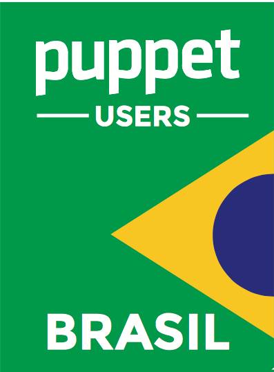

O Puppet é uma ferramenta Open Source para gerenciamento de configuração. Ele é utilizado por diversas empresas que precisam gerenciar milhares de máquinas físicas e virtuais ao redor do mundo.
O Puppet usa uma linguagem declarativa para configurar sistemas operacionais e tem suporte a Linux, *BSDs, Solaris, Windows e outros. A ideia é que se tenha a configuração centralizada em um único ponto, e essa configuração seja distribuída para diversos nós de uma rede.
Puppet pode realizar diversas tarefas, tais como:
- Gerência de configuração.
- Automação na instalação de pacotes.
- Estabelece e garante normas e facilidade de auditoria.
Ele é voltado para Desenvolvedores e Administradores de Sistemas e Redes. Saiba mais em Puppet e leia a nossa Apostila.
Se você está precisando de ajuda ou se você pode ajudar quem precisa, participe da nossa comunidade nos canais abaixo.